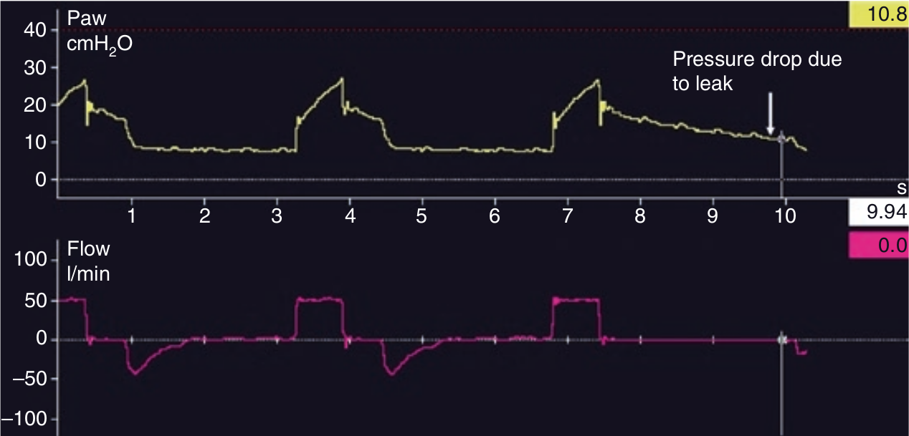

در صورت وجود نشت در مدار ونتیلاتور، فیستول برونکوپلورال، و یا نشت اطراف لوله تراشه (مثل لوله بدون کاف در کودک) PPLAT ثبات نخواهد داشت. استفاده از مقدار بدست آمده در این شرایط برای محاسبه کمپلیانس یا مقاومت راه هوائی موجب می شود نتایج حاصله اشتباه باشد.

وجود یک PPLAT رو به کاهش در هنگام انسداد پایان دمی توسط کدام مورد ایجاد میشود؟
۱ - نشت از مدار ونتیلاتور
۲ - فیستول برونکوپلورال
۳ - فشار کم در کاف لوله تراشه
۴ - تجویز نبولیزر هنگام انسداد
۵ - تمام موارد فوق